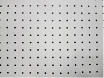
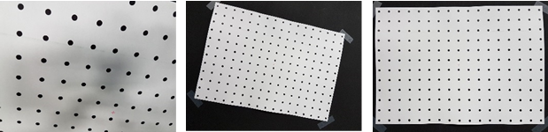

Capturing Images for Camera Tuning
/
Capture images and videos to use for tuning with Chromatix
Parent Topic
:
Capture images and videos to use for tuning with Chromatix
Capture dot chart images
Related tuning block: ICA1
The light can be D65, TL84, or D55 and should be between 200 and 400 lux.
Place camera on the tripod and position the camera parallel and aligned (not rotated) with the dot chart.
Set the camera to the minimum gain to reduce noise and set the exposure so there is no flickering from the light source.
Set the chart to 100%+ FOV. The image should include only the chart.
Ensure the captured image has no motion blur.
Figure : Good example

Figure : Bad examples – (L) too close (C) rotated (R) visible background
